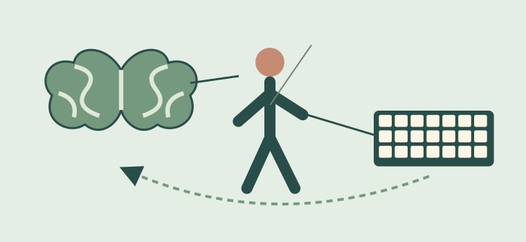

Understand CP
Explore clear explanations of CP and the different ways people experience everyday life.
Learn about CPFor people with cerebral palsy, families, and caregivers
Explore clear information, everyday adaptations, assistive technology, and a journal for your own discoveries.
Explore what you can do
Why I built Erry
Living with cerebral palsy has shaped how I experience everyday tasks—and how often I have to explain those experiences. I built Erry to help people feel understood, explore their options, and recognize the discoveries that matter to them.
Read my story
Explore clear explanations of CP and the different ways people experience everyday life.
Learn about CP
Discover ways to approach tasks such as typing, using a spoon, and writing.
Browse everyday activities
Learn how equipment and accessibility features can support different needs.
Explore support options
Optionally record what you tried, how it felt, and what you want to explore next.
Open my journalErry connects lived experience with biomedical engineering. A typing activity explores how a change in setup might support an everyday task.